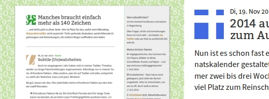
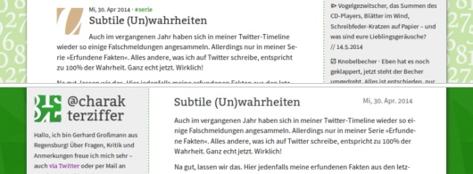

@charak terziffer
Hallo, ich bin Gerhard Großmann aus Regensburg (siehe Impressum). Über Fragen, Kritik und Anmerkungen freue ich mich sehr – auch via Twitter oder per Mail an postfach2b [ät] web.de.
Mein RSS-Feed  informiert immer pünktlich über neue Artikel. Alle bisherigen Einträge stehen im Archiv.
informiert immer pünktlich über neue Artikel. Alle bisherigen Einträge stehen im Archiv.
Die Texte in diesem Blog stehen unter einer Creative-Commons-Lizenz 3.0 (Deutschland) mit Namensnennung und Weitergabe unter gleichen Bedingungen. 
Manches braucht mehr als 140 Zeichen …
Auf dieser Website ist Platz für das, wofür mein Twitterprofil @charakterziffer nicht ausreicht. Mein Blog ist als Plus zu meinen Tweets gedacht, eben „@cz+“. // Die letzten drei Artikel:
Do, 24. Juli 2014
Fotorealistische Malerei
Sobald ein gemaltes Kunstwerk einer Fotografie zum Verwechseln ähnlich sieht, hat es den wichtigsten Aspekt verloren. Oder anders formuliert: Wer fotorealistisch malt, ist kein Künstler mehr, sondern „nur noch“ ein brillanter Handwerker.
Soweit meine These. – Ein eigenes Blog ist ja eine wunderbare Sache, um subjektiv und ahnungslos seine Meinung zu äußern. Das will ich denn mal tun. Ausgesucht habe ich einen Themenbereich, über den man vortrefflich streiten kann, nämlich Kunst. Allerdings soll meine Behauptung aus dem ersten Absatz hier nicht unbegründet stehen bleiben.
Für mich muss ein Kunstwerk etwas ausdrücken: eine Idee, Kritik, eine Stimmung, ein Gefühl. Das muss nicht unbedingt allgemein verständlich sein; wichtig ist, dass der Künstler sein Werk aus diesem Antrieb heraus erschafft. So bildet die Idee den Kern eines Kunstwerks und auch dessen Daseinszweck.

Zu versuchen, ein Motiv so wirklichkeitsgetreu wie möglich abzubilden, steht dem frontal im Weg. Erst wenn man ein Motiv (wenn auch nur subtil) überhöht, verzerrt oder anderweitig verfremdet, bekommt es eine Aussage, die über eine reine Dokumentation des Gesehenen hinausgeht.
Wie subtil solche Verfremdungen sein können, zeigen die Werke von Kinoplakat-Malern. Gesichter und wichtige Details werden hier sehr realistisch durchgezeichnet, andere Bildstellen eher angedeutet. Letztendlich bekommt das Plakat trotz seines stellenweise starken Realismus eine handgemachte Anmutung und fällt durch seinen Kontrast ins Auge.
Die bisherigen Ausführungen sollen im Umkehrschluss nicht bedeuten, ein „richtiges“ Foto könne keine künstlerische Aussage enthalten. Die Fotografie kann dafür ähnliche Mittel benutzen wie die Malerei, zum Beispiel Licht/Schatten, Perspektive oder Komposition. Gerade mit Blick auf die heutigen Möglichkeiten Montage reicht es für gemalte Kunstwerke aber nicht mehr, sich auf diese Mittel der Fotografie zu beschränken.
Wer ein Kunstwerk mit einer Aussage schaffen möchte (und nur ein solches würde ich als Kunstwerk bezeichnen), dessen Ziel sollte nicht sein, so realistisch wie möglich zu malen.
Mi, 18. Juni 2014
Ein Fuchs für alle Fälle
Wer einen künstlerischen Beruf hat oder zumindest kreativ arbeitet, der könnte manchmal wohl auch einen Fuchs brauchen – so einen verständnisvollen Ratgeber wie der in meiner Twitter-Serie „Fuchs und Ballerina“. In den #Fuchs-Tweets beantwortet er die Fragen der verunsicherten Tänzerin und vermittelt lebenskluge Einsichten:
⬗ »Ja es gibt anstrengende Regisseure«, sprach der #Fuchs zur Ballerina. »Das ist aber kein Grund für dich, das ganze Stück zu verfluchen.« (#)
⚖ »Uns fällt so vieles ein, das wir gern hätten«, sprach der #Fuchs zur Ballerina. »Leider nur vergessen wir oft, was wir schon haben.« (#)
❚ »Betrachte Grenzen nicht als Hindernis«, sprach der #Fuchs zur Ballerina. »Sie motivieren dich, Einschränkungen kreativ zu umgehen.« (#)
♥ »Egal was manche Leute sagen«, sprach der #Fuchs zur Ballerina. »Du hast nicht den falschen Beruf gewählt. Dein Herz weiß das am besten.« (#)
Ϟ »Lass gut sein«, sprach der #Fuchs zur Ballerina. »Manchmal hilft man jemandem am besten, indem man ihm gar nicht hilft.« (#)
ⵘ »Pass auf, bevor du es dir mit jemandem verscherzt«, sprach der #Fuchs zur Ballerina. »Deine Branche ist klein, da kennt jeder jeden.« (#)
☞ »Zeige, dass deine Lösung besser ist«, sprach der #Fuchs zur Ballerina. »Etwas vorzuführen ist fast immer besser als es nur zu erklären.« (#)
ꗤ »Wenn du nur Lob kassierst, lernst du nichts«, sprach der #Fuchs zur Ballerina. »Bitte um Kritik; ignorieren kannst du sie immer noch.« (#)
✖ »Mach dir bewusst, was du kannst«, sprach der #Fuchs zur Ballerina. »Beim übrigen halte dich zurück, das ergibt sonst nur Kitsch.« (#)
✨ »Nicht jede Frage verlangt eine neue Antwort«, sprach der #Fuchs zur Ballerina. »Oft reicht Vorhandenes.« […] (#)
Übrigens: Viele der Tweets beruhen auf eigener Erfahrungen – obwohl ich bisher nicht als Ballerina tätig war ☺.
Ältere Folgen dieser Serie habe ich im Juli 2013 zusammengetragen.
Di, 27. Mai 2014
Neues Design für @cz+
Ich hätte es nicht gedacht, aber mein Blog „@cz+“ ist ganz schön gewachsen. Seit November 2010 habe ich dreiundvierzig Artikel verfasst – zu viele, als dass die ursprüngliche Struktur weiterhin funktioniert hätte. Deswegen habe ich @cz+ nun umfassend technisch überarbeitet und auch grafisch weiterentwickelt. Weg vom früheren Design:

Zu Beginn war dieses Blog eine reine Weiterführung meines Twitterprofils @charakterziffer. Ich habe mehrere kurze Artikel auf einer einzelnen HTML-Seite versammelt, ein farbiges Quadrat vor jeder Überschrift sollte an einen Twitter-Avatar erinnern. Jeder Blogbeitrag war quasi ein längerer Tweet. Zunächst gab es weder Bilder noch verlinkte Materialien; alles, was für die Gestaltung gebraucht wurde, war in die eine Datei eingebettet.
Mit den Inhalten kam die Komplexität
Mit der Zeit haben sich aber einfach zuviele Artikel auf der einen Seite angesammelt und ich habe für die zehn ältesten eine Archivseite angelegt. Und dann noch eine. Und noch eine. Die CSS-Befehle (fürs Design) habe ich in eine externe Datei ausgelagert, habe Bilder hinzugefügt und PDFs verlinkt. Inhaltlich habe ich meine Themenpalette erweitert und mich weniger stark auf Twitter konzentriert.
Was mich zu einem größeren Umbau motiviert hat, war diesen April die Meldung, dass Ubuntu One demnächst schließt. Das war der Cloud-Service, bei dem ich meine Dateien gelagert hatte. Daraufhin bin ich zu GitHub Pages gewechselt, wo ich Dateien besser untereinander verlinken und organisieren kann. Ich werde verlinktes Material nun also nicht mehr nach einiger Zeit offline stellen, wie ich es bislang aus organisatorischen Gründen getan habe.
Jekyll sortiert alle Artikel
Über GitHub Pages bin ich auch auf Jekyll gestoßen. Das ist ein Generator für statische Websites, der einzelne Textdateien in Artikel umwandelt und diese untereinander verlinkt. Damit ist es kinderleicht, jedem Blogeintrag eine eigene, permanente Unterseite zu spendieren, die direkt aufgerufen und kommentiert werden kann.
Mit Jekyll platziere ich auch die drei neusten Einträge in voller Länge auf der Startseite; außerdem gibt es ein Archiv, in dem jeder neue Artikel automatisch auftaucht. Dieses Archiv lässt sich mithilfe von JavaScript übrigens filtern, so dass beispielsweise nur die Einträge zum Thema Typografie angezeigt werden.
Gestalterisch von Twitter emanzipiert

Von der grafischen Gestaltung her habe ich wenige, aber augenfällige Details verändert: Die Randspalte ist nun links statt rechts und der Seitenhintergrund hat ein sattes Grün bekommen statt dem blassen Zahlenmuster. Die Farbquadrate vor den Überschriften sind genauso verschwunden wie die drei letzten Tweets; damit möchte ich mein Blog gestalterisch stärker von Twitter trennen.
Gleich geblieben ist dagegen die Schriftmischung aus Bitter und Source Sans Pro. Zwar habe ich die gleiche Kombination mittlerweile auf zwei anderen Websites gesehen – so einmalig ist die Mischung also nicht mehr –, aber sie gefällt mir immer noch gut und passt zur Klarheit und Persönlichkeit meiner Blogartikel.
Direktes Kommentieren erlaubt
Weil mein Blog noch immer eine statische Website ist, sind dynamisch und interaktiv erstellte Inhalte technisch unmöglich. Ich finde aber, dass Kommentare einen Artikel sehr bereichern können. Deswegen greife ich für die Kommentarfunktion auf einen externen Anbieter zurück, der mir Eingaben im HTML-Formular als E-Mail zuschickt. Die so empfangenen Kommentare füge ich dann manuell in die Seite ein (da hilft mir das Jekyll-Plugin Static Comments von Matt Palmer).
Ich bin gespannt auf Rückmeldungen zum neuen Design. Pseudonymes Kommentieren als Gast ist übrigens möglich, ich bin da nicht so. Weiterhin eine vergnügliche Lektüre mit @cz+!
Alle Artikel im Archiv lesen …
Sonstiges
Warum „Charakterziffer“?
Das Wort kombiniert Persönlichkeit (Charakter) mit Sachlichem (Ziffer). Zusammengesetzt ergibt sich ein Synonym für Mediävalziffer, eine Zahlenvariante mit Ober- und Unterlängen.
Schriftarten dieses Blogs
Wenn dein Browser eingebettete Schriften (WOFF/TTF) unterstützt, dann liest du die Fließtexte hier in der Source Sans Pro von Paul D. Hunt, erschienen 2012 bei Adobe.
Die Überschriften sind aus der Bitter von Sol Matas gesetzt, die der argentinische Schriftverlag Huerta Tipográfica 2011 veröffentlicht hat.
Impressum
Anbieterkennzeichnung nach TMG §5:
Gerhard Großmann · Geibelplatz 10 · 93051 Regensburg
E-Mail: postfach2b [ät] web.de, SMS: 0178/1961914
Rechtliche Hinweise
§1 Die Verwendung meiner Kontaktdaten zur gewerblichen Werbung ist ausdrücklich nicht erwünscht; ich widerspreche hiermit jeder kommerziellen Verwendung und Weitergabe meiner Daten. // Private Fanpost ist allerdings sehr willkommen!
§2 Dieses Blog verlinkt auf Websites Dritter („externe Links“). Zum Zeitpunkt der erstmaligen Verlinkung waren dort keine Rechtsverstöße ersichtlich. Da ich keinen Einfluss auf fremde Websites habe, kann ich für deren Inhalte und Gestaltung keine Haftung übernehmen. Sollte ich von Rechtsverstößen erfahren, entferne ich die Verlinkung unverzüglich. Eine ständige Kontrolle der externen Links ist ohne konkrete Hinweise aber nicht zumutbar.
Website zuletzt erstellt: 2014-07-24T07:48:11+02:00